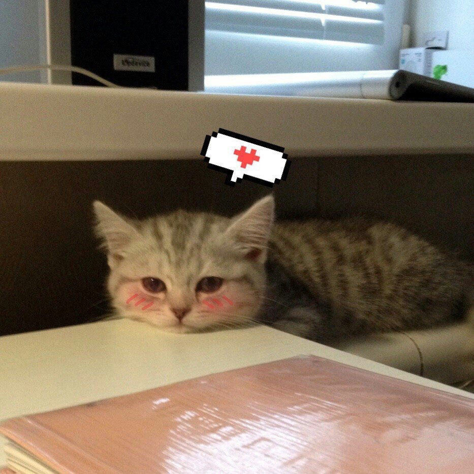

Минимальное описание бота :)
В общем, бот является не коммерческим, зароботка на нем нет, рекламы в нем так-же нет.
Разработан и воплощен в жизнь для создания димотиваторов прямо в Discord(в будущем и Telegram).
Ну, я не придумал что еще сюда вписать, поэтому просто посмотрите на фото котика ниже :3
